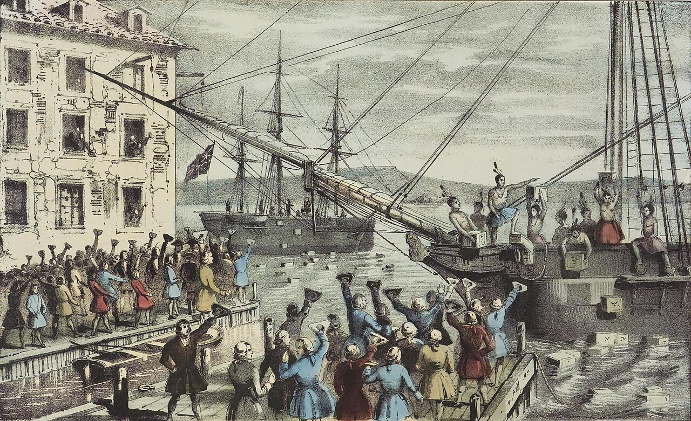
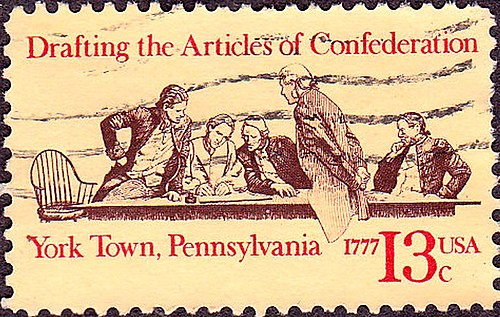
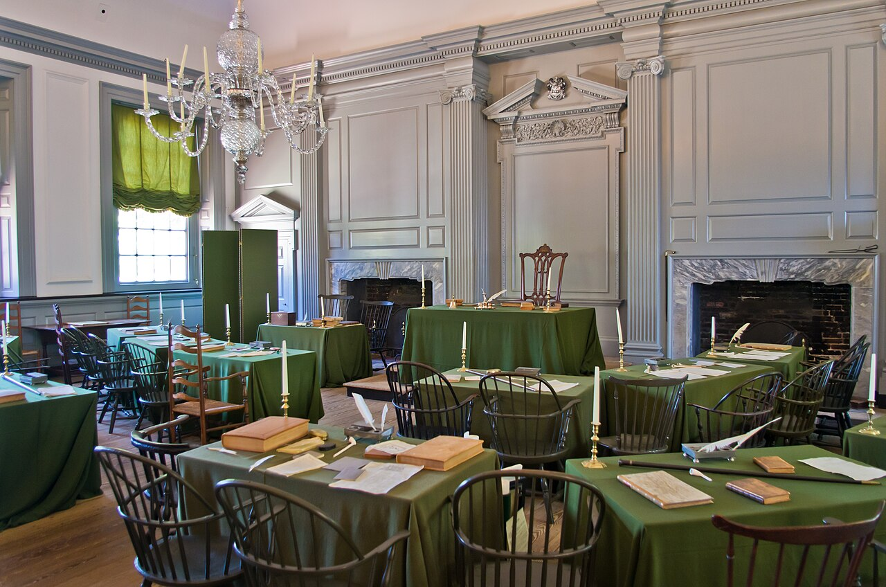
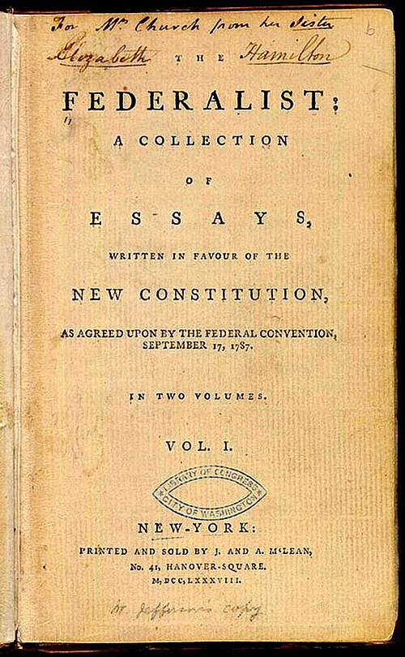
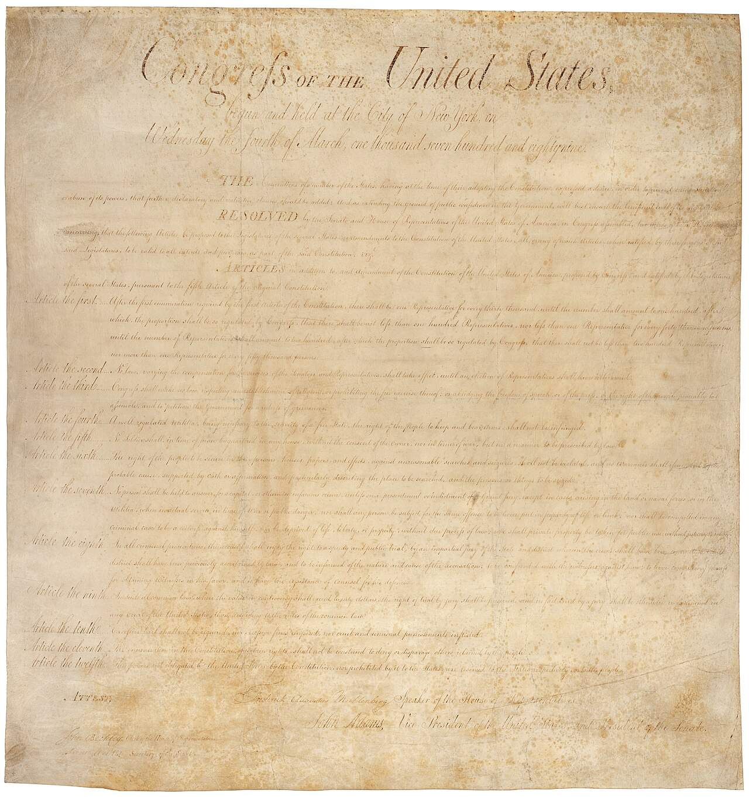

📜 Chapter 2: The Constitution and Its Origins 📜
Discover How America's Foundational Document Came to Be
📊 Your Progress
🎯 Choose Your Learning Quest
Pre-Revolutionary Roots
Explore the political ideas and events that sparked American independence
🎯 200 pointsArticles of Confederation
Examine America's first attempt at national government and its failures
🎯 200 pointsConstitutional Convention
Discover the debates, compromises, and design of the Constitution
🎯 250 pointsRatification Battle
Follow the Federalists vs. Anti-Federalists debate
🎯 200 pointsConstitutional Change
Learn about the amendment process and key changes over time
🎯 200 pointsCompletion Report
View your complete learning journey and final grade
🎯 Final Score🗽 The Pre-Revolutionary Period and Roots of American Political Tradition
Discover the philosophical foundations and events that led to American independence
- Identify the origins of core values in American political thought
- Understand ideas regarding representational government
- Summarize Great Britain's actions leading to the American Revolution
Political Thought in the American Colonies
American political ideas regarding liberty and self-government did not suddenly emerge full-blown at the moment the colonists declared their independence from Britain. The varied strands of what became the American republic had many roots, reaching far back in time and across the Atlantic Ocean to Europe. Indeed, it was not new ideas but old ones that led the colonists to revolt and form a new nation.
The beliefs and attitudes that led to the call for independence had long been an important part of colonial life. Of all the political thinkers who influenced American beliefs about government, the most important is surely John Locke. The most significant contributions of Locke, a seventeenth-century English philosopher, were his ideas regarding the relationship between government and natural rights, which were believed to be God-given rights to life, liberty, and property.

+15 points! Excellent exploration!
Locke was not the first Englishman to suggest that people had rights. The British government had recognized its duty to protect the lives, liberties, and property of English citizens long before the settling of its North American colonies.
In 1215, King John signed Magna Carta—a promise to his subjects that he and future monarchs would refrain from certain actions that harmed, or had the potential to harm, the people of England. Prominent in Magna Carta's many provisions are protections for life, liberty, and property. One of its most famous clauses promises: "No freemen shall be taken, imprisoned... or in any way destroyed... except by the lawful judgment of his peers or by the law of the land."
The rights protected by Magna Carta had been granted by the king, and in theory, a future king could take them away. The natural rights Locke described, however, had been granted by God and thus could never be abolished by human beings, even royal ones, or by the institutions they created.
+15 points! Historical connection unlocked!
So committed were the British to the protection of natural rights that when the royal Stuart dynasty began to intrude upon them in the seventeenth century, Parliament removed King James II (already disliked because he was Roman Catholic) in the Glorious Revolution and invited his Protestant daughter and her husband to rule the nation.
Before offering the throne to William and Mary, Parliament passed the English Bill of Rights in 1689. Heavily influenced by Locke's ideas, this document enumerated the rights of English citizens and explicitly guaranteed rights to life, liberty, and property. This document would profoundly influence the U.S. Constitution and Bill of Rights.
American colonists also shared Locke's concept of property rights. In the colonists' eyes, all free White males should have the right to acquire property, and once it had been acquired, government had the duty to protect it.
Self-Government Traditions
The desire to limit the power of government is closely related to the belief that people should govern themselves. This core tenet of American political thought was rooted in a variety of traditions.
The British government did allow for a degree of self-government. Laws were made by Parliament, and property-owning males were allowed to vote for representatives. Americans were accustomed to the idea of representative government from the beginning:
- Virginia House of Burgesses (1619) - America's first representative assembly
- Mayflower Compact (1620) - English Separatists agreed to govern themselves according to laws created by male voters
- By the 18th century, all colonies had established legislatures
The Road to Revolution
The American Revolution began when a small and vocal group of colonists became convinced the king and Parliament were abusing them and depriving them of their rights. For more than a century, England had treated the colonies with benign neglect. Each colony had its own legislature. Taxes were low, and property ownership was widespread. People readily proclaimed their loyalty to the king and were proud to be British citizens.

+15 points! Timeline mastered!
Declaration of Independence
The First Continental Congress formed in 1774 to create unified opposition to Great Britain. After fighting began at Lexington and Concord in 1775, the Second Continental Congress declared American independence on July 2, 1776, and signed the Declaration of Independence two days later.
+15 points! Foundation document explored!
Drafted by Thomas Jefferson, the Declaration officially proclaimed the colonies' separation from Britain and eloquently laid out the reasons for rebellion:
- God had given everyone the rights of life, liberty, and the pursuit of happiness
- People created governments to protect these rights
- When government becomes destructive of these ends, it is the right of the people to alter or abolish it
- The king had "establish[ed]... an absolute Tyranny over these States"
Jefferson listed the king's abuses: taxing without consent, interfering with trade, denying trial by jury, and depriving colonists of self-government.
📋 The Articles of Confederation
America's first attempt at national government and why it failed
- Describe the steps taken during and after the Revolution to create a government
- Identify the main features of the Articles of Confederation
- Describe the crises resulting from key features of the Articles
Creating a New Government
Waging a successful war against Great Britain required that the individual colonies, now sovereign states that often distrusted one another, form a unified nation with a central government capable of directing the country's defense. Gaining recognition and aid from foreign nations would also be easier if the new United States had a national government able to borrow money and negotiate treaties.
The Second Continental Congress called upon its delegates to create a new government strong enough to win the country's independence but not so powerful that it would deprive people of the very liberties for which they were fighting.

+15 points! Historical milestone discovered!
The final draft of the Articles of Confederation was accepted by Congress in November 1777 and submitted to the states for ratification. It would not become law until all thirteen states approved it.
Within two years, all except Maryland had done so. Maryland argued that all territory west of the Appalachians, to which some states had laid claim, should instead be held by the national government as public land for the benefit of all states.
When Virginia relinquished its land claims in early 1781, Maryland approved the Articles. A few months later, the British surrendered at Yorktown.
Republic: A regime in which the people, not a monarch, hold power and elect representatives to govern according to the rule of law.
Confederation: An entity in which independent, self-governing states form a union for the purpose of acting together in areas such as defense. Fearful of replacing one oppressive national government with another, the framers of the Articles created an alliance of sovereign states held together by a weak central government.
Structure Under the Articles
Following the Declaration of Independence, each of the thirteen states had drafted and ratified a constitution providing for a republican form of government. Each state had a governor and an elected legislature. The states remained free to govern their residents as they wished.
+15 points! Government structure analyzed!
Powers given to the central government were severely limited:
- Exchange ambassadors and make treaties with foreign governments and Indian tribes
- Declare war
- Coin currency and borrow money
- Settle disputes between states
Key limitations:
- Each state had only one vote regardless of size
- Delegates could serve no more than three consecutive years
- No independent chief executive or judiciary
- Nine votes required before government could act
- Unanimous approval needed to change the Articles
What Went Wrong?
The Articles satisfied those who wanted a weak central government with limited power. Ironically, their very success led to their undoing. It soon became apparent that while they protected state sovereignty, the Articles had created a central government too weak to function effectively.
| Weakness | Why It Was a Problem |
|---|---|
| Could not impose taxes | Had to request money from states; could not pay debts or fund national defense |
| Could not regulate foreign trade or interstate commerce | Could not protect American businesses from foreign competition or prevent interstate trade wars |
| Could not raise an army | Had to request troops from states; could not defend the nation |
| Each state had one vote regardless of size | Populous states were underrepresented |
| Unanimous vote required to change Articles | Problems could not be easily fixed |
| No national judicial system | Could not enforce national laws |
+15 points! Economic crisis examined!
Currency Problems:
- The Continental currency issued by Congress was largely worthless
- States were allowed to issue their own banknotes, creating confusion
- People often refused to accept unfamiliar currencies
Trade Problems:
- British merchants flooded the U.S. market with low-priced goods
- States imposed tariffs on products from other states
- Interstate commerce was chaotic and unpredictable
Foreign Relations:
- British refused to evacuate western lands because U.S. couldn't pay debts
- American ships were attacked by Barbary pirates
- Foreign nations reluctant to loan money to a government that couldn't tax
Shays' Rebellion: The Breaking Point
The weaknesses of the Articles became apparent to all as a result of an uprising of Massachusetts farmers, led by Daniel Shays.
In the summer of 1786, farmers in western Massachusetts were heavily in debt, facing imprisonment and the loss of their lands. They owed taxes that had gone unpaid while they were fighting in the Revolution. The Continental Congress had promised to pay them for their service, but the national government didn't have the money.
- Led by Daniel Shays, heavily indebted farmers marched to a courthouse demanding relief
- Governor James Bowdoin called upon the national government for help
- The national government had no army to send
- Massachusetts eventually crushed the uprising with private militias and privately funded armies
- Wealthy people were frightened by this display of unrest
To find a solution, members of Congress called for a revision of the Articles of Confederation.
+15 points! Critical crisis analyzed!
In the summer of 1786, farmers in western Massachusetts were heavily in debt, facing imprisonment and the loss of their lands. They owed taxes that had gone unpaid while they were fighting in the Revolution. The Continental Congress had promised to pay them for their service, but the national government didn't have the money.
- Led by Daniel Shays, heavily indebted farmers marched to a courthouse demanding relief
- Governor James Bowdoin called upon the national government for help
- The national government had no army to send
- Massachusetts eventually crushed the uprising with private militias and privately funded armies
- Wealthy people were frightened by this display of unrest
To find a solution, members of Congress called for a revision of the Articles of Confederation.
⚖️ The Development of the Constitution
Debates, compromises, and the creation of our governing document
- Identify the conflicts present and the compromises reached in drafting the Constitution
- Summarize the core features of the structure of U.S. government under the Constitution
The Road to Philadelphia
In 1786, Virginia and Maryland invited delegates from the other eleven states to meet in Annapolis, Maryland, to revise the Articles of Confederation. However, only five states sent representatives. Because all thirteen states had to agree to any alteration of the Articles, the convention could not accomplish its goal.
Two delegates, Alexander Hamilton and James Madison, requested that all states send delegates to a convention in Philadelphia the following year. Because the shortcomings of the Articles proved impossible to overcome, the convention decided to create an entirely new government.
Points of Contention
Fifty-five delegates arrived in Philadelphia in May 1787 for what became known as the Constitutional Convention. Notable absences included John Adams and Thomas Jefferson, who were overseas as diplomats. The only decision all could agree on was the election of George Washington as president of the convention.

+15 points! Convention dynamics revealed!
The delegates had many competing concerns:
- Strengthen government vs. Fear of too much power
- Preserve state autonomy vs. Need for national unity
- Protect individual rights vs. Maintain law and order
- Give political rights to all free men vs. Fear mob rule
- Large states wanted representation by population
- Small states wanted equal representation
- Northern states were abolishing slavery
- Southern states wanted to protect slavery
The Virginia Plan vs. The New Jersey Plan
| Virginia Plan (Large States) | New Jersey Plan (Small States) |
|---|---|
| Bicameral (two-house) legislature | Unicameral (one-house) legislature |
| Representation based on population in both houses | Each state gets one vote (equal representation) |
| Lower house elected by popular vote | Legislature appointed by state governments |
| Upper house chosen by lower house | Congress can regulate commerce and compel state compliance |
| Strong national government can veto state laws | States retain significant power over national government |
+15 points! Key compromise mastered!
Suggested by Roger Sherman of Connecticut, the Great Compromise (also called the Connecticut Compromise) created our current Congress:
- Senate: Two senators per state, regardless of population (satisfies small states)
- House of Representatives: Representation based on population (satisfies large states)
- Senators were originally appointed by state legislatures
- House members directly elected by voters
- House terms: 2 years; Senate terms: 6 years
The Slavery Question
The Great Compromise led to another debate: When counting population for House representation, should enslaved people be counted?
+15 points! Critical compromise examined!
Southern states wanted enslaved people counted for representation (more House seats)
Northern states argued representatives couldn't truly represent enslaved people
The Three-Fifths Compromise:
- Count all free population PLUS 60% (three-fifths) of enslaved population
- This applied to both representation AND federal taxation
- Gave slaveholding states more political power
Additional compromises on slavery:
- Congress could not ban the foreign slave trade until 1808
- No restrictions on the domestic slave trade
- Fugitive slave clause: States had to return escaped enslaved people to their enslavers
No serious effort was made to abolish slavery because South Carolina and Georgia threatened to leave the convention.
Separation of Powers and Checks and Balances
The chief concern was increasing federal authority while ensuring it didn't become too powerful. The framers solved this through separation of powers and checks and balances.
Separation of Powers: Dividing government into three branches with different responsibilities:
- Legislative (Congress): Makes laws
- Executive (President): Enforces laws
- Judicial (Courts): Interprets laws
Checks and Balances: Each branch can limit the actions of the others:
- President can veto legislation
- Congress can override vetoes with 2/3 vote
- Senate must approve presidential appointments and treaties
- Congress can impeach and remove the president
- Supreme Court can declare laws unconstitutional (judicial review, established later)
+15 points! Federalism foundations understood!
The framers created a federal system dividing power between national and state governments:
Enumerated Powers (given explicitly to the federal government):
- Declare war, maintain army and navy
- Impose taxes, coin money, borrow money
- Regulate foreign and interstate commerce
- Maintain post office, grant patents and copyrights
- Make treaties and regulate naturalization
Reserved Powers (left to the states):
- Intrastate commerce, marriage, education
- Public health and safety
- Most criminal and civil law
Supremacy Clause: The Constitution, federal laws, and treaties are the "supreme Law of the Land"
Necessary and Proper Clause: Congress can make all laws "necessary and proper" to carry out its enumerated powers
📜 The Ratification of the Constitution
The fierce debate between Federalists and Anti-Federalists
- Identify the steps required to ratify the Constitution
- Describe arguments the framers raised in support of a strong national government
- Understand counterpoints raised by the Anti-Federalists
The Ratification Process
On September 17, 1787, the delegates voted to approve the Constitution. But before it could become law, it faced another hurdle: ratification by the states.

Article VII required that nine of the thirteen states ratify the Constitution before it could take effect. Eleven days after approval, copies were sent to each state for ratifying conventions.
+15 points! Strategic thinking revealed!
This approach to ratification was unusual and strategic:
- Changes to the Articles should have been ratified by state legislatures
- But state legislators would have to give up some of their own power
- Instead, elected convention delegates would vote
- These delegates were not giving up their own power—they were limiting state legislators' power
- If delegates chosen by popular vote approved, the new government could claim it ruled with the consent of the people
Federalists vs. Anti-Federalists
Citizens quickly separated into two groups on the question of ratification.

| Federalists (Supported Constitution) | Anti-Federalists (Opposed Constitution) |
|---|---|
| Elite members: wealthy landowners, businessmen, military commanders | Many distrusted the elite; believed small farmers should hold power |
| Strong government needed for national defense and economic growth | Feared federal government would favor the rich |
| National currency would ease business transactions | Worried strong government would become tyrannical |
| Federal tariffs would protect from foreign competition | Believed state legislatures better protected freedoms |
| Strong support in New England | Strongest in the South; feared taxes on farmers |
| Large republic could work with proper safeguards | Large republic couldn't maintain virtue needed for self-government |
+15 points! Opposition arguments understood!
Patrick Henry of Virginia feared:
- The office of president would place excessive power in one person
- Federal government's new ability to tax citizens
Edmund Randolph worried about:
- The new federal judicial system
- Federal courts would be too far from where people lived
Greatest concern: No protection of individual liberties!
- State governments gave jury trials and allowed weapons possession
- Some practiced religious tolerance
- The Constitution contained no such guarantees
- Many called for a bill of rights and refused to ratify without one
The Federalist Papers
Facing considerable opposition to the Constitution, especially in New York, Alexander Hamilton, James Madison, and John Jay wrote a series of essays arguing for a strong federal government.
+15 points! Essential documents explored!
These 85 essays were published in newspapers under the name "Publius" (a supporter of the Roman Republic). Key arguments included:
Federalist No. 10 (Madison):
- Americans need not fear factions or special interests
- The republic is too big and diverse for large, powerful political parties to form
- Elected representatives will possess "the most attractive merit"
Federalist No. 51 (Madison):
- The federal system divides power between national and state governments
- Separation into three branches prevents tyranny
- "Ambition must be made to counteract ambition"
Federalist No. 70 (Hamilton):
- A single executive is not dangerous—it's easier to control one person than many
- One person can act with "energy" and speed when needed
The Path to Ratification
📝 Constitutional Change
How the Constitution evolves through amendments
- Describe how the Constitution can be formally amended
- Explain the contents and significance of the Bill of Rights
- Discuss the importance of the Thirteenth, Fourteenth, Fifteenth, and Nineteenth Amendments
The Amendment Process
A major problem with the Articles of Confederation was the difficulty of changing them without unanimous consent. The framers learned this lesson and built into the Constitution the ability to amend it—but made the process difficult enough that it wouldn't be changed repeatedly.
Since ratification in 1789, the Constitution has been amended only 27 times. The first ten amendments were added in 1791, and only seventeen have been added since.

+15 points! Amendment process mastered!
Article V outlines two methods for proposing amendments:
Method 1 (used for all 27 amendments):
- Proposed by Congress
- Requires two-thirds majority in both House and Senate
Method 2 (never used):
- Two-thirds of state legislatures petition Congress
- Congress must call a national convention
Ratification (two methods):
- Three-quarters of state legislatures approve, OR
- Three-quarters of state-ratifying conventions approve
The Bill of Rights
James Madison, now a member of Congress from Virginia, drafted nineteen potential amendments. Congress approved twelve, and the states ratified ten. In 1791, these became the Bill of Rights.
+15 points! Foundational rights understood!
Many were based on the English Bill of Rights and Virginia Declaration of Rights:
| Amendment | Protection |
|---|---|
| 1st | Religion, speech, press, assembly, petition |
| 2nd | Right to bear arms |
| 3rd | No quartering soldiers in peacetime |
| 4th | Protection from unreasonable search and seizure |
| 5th | Due process, self-incrimination, double jeopardy, eminent domain |
| 6th | Right to speedy, public trial by jury |
| 7th | Right to jury trial in civil cases |
| 8th | No excessive bail, fines, or cruel punishment |
| 9th | Rights not listed are still retained by the people |
| 10th | Powers not given to federal government are reserved to states |
The 1st and 4th Amendments did not come from English precedent—they were new American innovations!
Key Later Amendments
Four amendments are of especially great significance—the result of long-fought campaigns by supporters of abolition and the expansion of voting rights.
+15 points! Reconstruction amendments explored!
13th Amendment (1865):
- Abolished slavery in the United States
14th Amendment (1868):
- Granted citizenship to African Americans
- Guaranteed equal protection under the law regardless of race
- Prohibited states from depriving residents of life, liberty, or property without due process
- Over the years, used to apply most Bill of Rights protections to state governments
15th Amendment (1870):
- Gave men the right to vote regardless of race or color
- Women were still prohibited from voting in most states
+15 points! Democratic expansion traced!
19th Amendment (1920):
- Gave women the right to vote
- After decades of campaigns by suffragists like Susan B. Anthony and Ida B. Wells
23rd Amendment (1961):
- Allowed Washington, D.C. residents to vote for president
24th Amendment (1964):
- Abolished poll taxes
- Southern states had used poll taxes to prevent poor African Americans from voting
26th Amendment (1971):
- Lowered voting age from 21 to 18
- Passed during Vietnam War—young men fighting should be able to vote
- 17th Amendment (1913): Direct election of senators by voters (instead of state legislatures)
- 20th Amendment (1933): Moved presidential inauguration from March to January
- 21st Amendment (1933): Repealed Prohibition (18th Amendment)—the only amendment to repeal another
- 22nd Amendment (1951): Limited presidents to two terms
- 27th Amendment (1992): Regulates congressional salary changes (originally proposed in 1789!)
Student Name: Not entered
Date:
Time:
Total Time Spent: -
Section Performance
| Section | Status | Points | Time Spent |
|---|